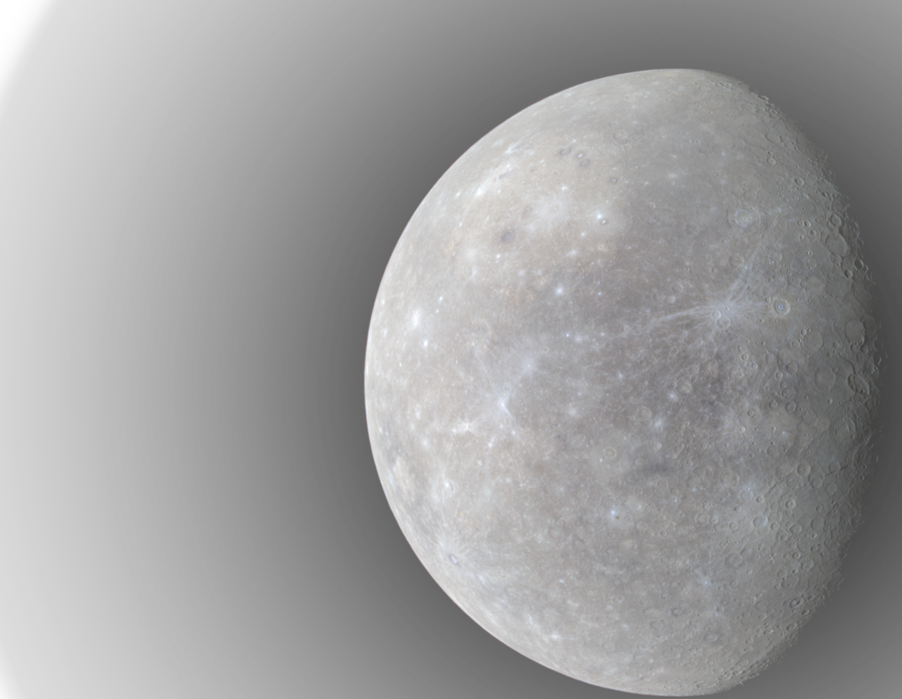

Mercury
Mercury is the smallest planet in the Solar System and the closest to the Sun. Its orbit around the Sun takes 87.97 Earth days, the shortest of all the Sun's planets. Mercury is one of four terrestrial planets in the Solar System, and is a rocky body like Earth.
Mercury appears to have a solid silicate crust and mantle overlying a solid, iron sulfide outer core layer, a deeper liquid core layer, and a solid inner core. The planet's density is the second highest in the Solar System at 5.427 g/cm3 , only slightly less than Earth's density.
Mercury's surface is similar in appearance to that of the Moon, showing extensive mare-like plains and heavy cratering, indicating that it has been geologically inactive for billions of years. It is more heterogeneous than either Mars's or the Moon’s.
Mercury's core has a higher iron content than that of any other major planet in the Solar System, and several theories have been proposed to explain this. The most widely accepted theory is that Mercury originally had a metal–silicate ratio similar to common chondrite meteorites, thought to be typical of the Solar System's rocky matter, and a mass approximately 2.25 times its current mass.Early in the Solar System's history, Mercury may have been struck by a planetesimal of approximately 1/6 Mercury's mass and several thousand kilometers across. The impact would have stripped away much of the original crust and mantle, leaving the core behind as a relatively major component.A similar process, known as the giant impact hypothesis, has been proposed to explain the formation of the Moon.
| Mass | 3.3011×1023 kg |
|---|---|
| Rotation Period | 59 Earth Days |
| Surface Gravity | 3.7 m/s2 |
| Volume | 6.083×1010 km3 |